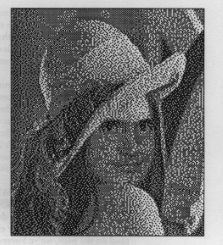

Macintosh developers faced with the dilemma of which platform to develop software
for--machines with the original QuickDraw or those with Color QuickDraw--can
always choose to write code that runs adequately on the lower-end machines and gives
additional functionality when running on the higher-end machines. While this sounds
like a simple and elegant solution, it generally requires a great deal of development and
testing effort. To make this effort easier and the outcome more satisfying, we offer
techniques to save color images and process them for display on 1- bit
(black-and-white) devices.
Suppose you're writing a program that controls a 24-bit color scanner and you'd like
it to work on all Macintosh computers. The problem you'll run into is that machines
with the original QuickDraw (those based on the 68000 microprocessor) only have
support for bitmaps, thus severely crippling the potential of your scanner. But don't
despair. In our continuing quest to add Color QuickDraw functionality to machines with
original QuickDraw, we've worked out techniques to save color images and process
them for display, albeit in black and white, on the latter machines. We've also come up
with a technique to address the problem of a laser printer's inability to resolve single
pixels, which results in distorted image output. This article and the accompanying
sample code (on theDeveloper CD Series disc) share these techniques with you.
The key to saving color images is using pictures. Recall that a picture (or PICT) in
QuickDraw is a transcript of calls to routines that draw something--anything. A PICT
created on one Macintosh can be displayed on any other Macintosh (provided the
version of system software on the machine doing the displaying is the same as or later
than the version on the machine that created the picture). For example, on a Macintosh
Plus you can draw a PICT containing an 8-bit image that was created on a Macintosh II.
With System 7, you can even display PICTs containing 16-bit and 32-bit pixMaps on
machines with original QuickDraw. (Of course, they will only be displayed as 1-bit
images there.)
Creating a picture normally requires three steps:
The catch is that the only drawing commands that can be recorded into a picture are
those available on the Macintosh on which your application is running. Thus, using
this procedure on a machine with original QuickDraw provides no way to save color
pixMaps into a picture, since there's no call to draw a pixMap. In other words, you
can't create an 8-bit PICT on a Macintosh Plus and see it in color on a Macintosh II.
But that's exactly what would make a developer's life easier--the ability to create a
PICT containing deep pixMap information on a machine without Color QuickDraw. With
this ability, you could capture a color image in its full glory for someone with a Color
QuickDraw machine to see, while still being able to display a 1-bit version on a
machine with original QuickDraw.
To get around the limitations of the normal procedure, we came up with a routine
called CreatePICT2 to manually create a PICT containing color information. Your
application can display the picture using DrawPicture. Now, you may be wondering
whether creating your own pictures is advisable. After all, Apple frowns on developers
who directly modify private data structures, and isn't that what's going on here? To
ease your mind, see "But Don't I Need a License to Do This?"
The parameters to CreatePICT2 are similar to those for the QuickDraw bottleneck
procedure stdBits. The difference is that CreatePICT2 returns a PicHandle and does not
use a maskRgn.
The first thing the routine does is calculate a worst-case memory scenario and allocate
that amount of storage. If the memory isn't available, the routine aborts, returning a
NIL PicHandle. You could easily extend this routine to spool the picture to disk if the
memory is not available, but that's left as an exercise for you. (Hint : Rather than
writing out the data inline as is done here, call a function that saves a specified
number of bytes in the picture. Have that routine write the data to disk. Essentially,
you need an equivalent to the putPicData bottleneck.)
At this point the size of the picture is not known (since there's no way to know how
well the pixMap will compress) so we simply skip the picSize field and put out the
picture frame. Next is the picHeader. CreatePICT2 creates version $02FF pictures,
with a header that has version $FFFF. This version of the header tells QuickDraw to
ignore the header data. (OpenCPicture, available originally in 32-Bit QuickDraw
version 1.2 and in Color QuickDraw in System 7, still creates version $02FF
pictures, but the header version is now $FFFE and contains picture resolution
information.)
In addition, the bounds of the clipping region of the current port are put in the picture.
Without this, the default clipping region is wide open, and some versions of QuickDraw
have trouble drawing pictures with wide-open clipping regions.
Next we put out an opcode--either $98 (PackBitsRect) or $9A (DirectBitsRect),
depending on whether the pixMap is indexed or direct. Then the pixMap, srcRect,
dstRect, and mode are put in the picture using the (are you ready for this?)
PutOutPixMapSrcRectDstRectAndMode routine. Finally, either
PutOutPackedDirectPixData or PutOutPackedIndexedPixData is called to put out the
pixel data.
There's an important difference between indexed and direct pixMaps here. The
baseAddr field is skipped when putting out indexed pixMaps and is set to $000000FF
for direct pixMaps. This is done because machines without support for direct pixMaps
(opcode $9A) read a word from the picture, skip that many bytes, and continue
picture parsing. When such a machine encounters the $000000FF baseAddr, the
number of bytes skipped is $0000 and the next opcode is $00FF, which ends the
picture playback. A graceful exit from a tough situation.
An interesting fact buried in the PutOutPixMapSrcRectDstRectAndMode routine is the
value of packType. All in-memory pixMaps (that aren't in a picture) are assumed to
be unpacked. Thus, you can set the packType field to specify the type of packing the
pixMap should get when put in a picture. "The Low-Down on Image Compression"
(develop Issue 6, page 43) gives details of the different pixMap compression schemes
used by QuickDraw. Note that all of QuickDraw's existing packing schemes lose no
image quality. QuickTime (the new INIT described in detail in the lead article indevelop
Issue 7) adds many new packing methods, most of which sacrifice some image quality
to achieve much higher compression. Anyway, these routines support only the default
packing formats: 1 (or unpacked) for any pixMap with rowBytes less than 8, 0 for all
other indexed pixMaps, and 4 for 32-bit direct pixMaps with rowBytes greater than
8. Note that these routines do not support 16-bit pixMaps.
Finally, the end-of-picture opcode is put out and the handle is resized to the amount
actually used.
PicHandle CreatePICT2(PixMap *srcBits, Rect *srcRect, Rect *dstRect,
short mode)
{
PicHandle myPic;
short myRowBytes;
short *picPtr;
short iii;
long handleSize;
#define CLIPSIZE 12
#define PIXMAPRECSIZE 50
#define HEADERSIZE 40
#define MAXCOLORTABLESIZE 256*8+8
#define OPCODEMISCSIZE 2+8+8+2 /* opcode+srcRect+dstRect+mode */
#define ENDOFPICTSIZE 2
#define PICSIZE PIXMAPRECSIZE + HEADERSIZE + MAXCOLORTABLESIZE + \
ENDOFPICTSIZE + OPCODEMISCSIZE + CLIPSIZE
myRowBytes = srcBits->rowBytes & 0x3fff;
/* Allocate worst-case memory scenario using PackBits packing. */
myPic = (PicHandle) NewHandle(PICSIZE + (long)
((myRowBytes/127)+2+myRowBytes)*(long)(srcBits->bounds.bottom
- srcBits->bounds.top));
if(!myPic)
return(0);
/* Skip picSize and put out picFrame (10 bytes). */
picPtr = (short *) (((long)*myPic) + 2);
*picPtr++ = dstRect->top;
*picPtr++ = dstRect->left;
*picPtr++ = dstRect->bottom;
*picPtr++ = dstRect->right;
/* Put out header (30 bytes). This could be done from a resource or
taken from an existing picture. */
*picPtr++ = 0x11; /* Version opcode. */
*picPtr++ = 0x2ff; /* Version number. */
*picPtr++ = 0xC00; /* Header opcode. */
*picPtr++ = 0xFFFF; /* Put out PICT header version. */
*picPtr++ = 0xFFFF;
/* The rest of the header is ignored--0 it out. */
for(iii = 10; iii > 0; iii--)
*picPtr++ = 0; /* Write out 20 bytes of 0. */
/* Put out current port's clipping region. */
*picPtr++ = 0x01; /* Clipping opcode. */
*picPtr++ = 0x0A; /* Clipping region only has */
/* bounds rectangle. */
*picPtr++ = (**thePort->clipRgn).rgnBBox.top;
*picPtr++ = (**thePort->clipRgn).rgnBBox.left;
*picPtr++ = (**thePort->clipRgn).rgnBBox.bottom;
*picPtr++ = (**thePort->clipRgn).rgnBBox.right;
HLock(myPic);
if(srcBits->pixelType == RGBDirect)
{ /* Must be 32-bits/pixel */
/* Put out opcode $9A, DirectBitsRect. */
*picPtr++ = 0x9A;
*picPtr++ = 0; /* BaseAddr for direct pixMaps is 0x000000FF.
*/
*picPtr++ = 0xFF;
PutOutPixMapSrcRectDstRectAndMode(srcBits, &picPtr, srcRect,
dstRect, mode);
if(PutOutPackedDirectPixData(srcBits, &picPtr))
goto errorExit; /* Nonzero indicates an error. */
}
else
{
/* Put out opcode $98, PackBitsRect. */
*picPtr++ = 0x98;
PutOutPixMapSrcRectDstRectAndMode(srcBits, &picPtr, srcRect,
dstRect, mode);
if(PutOutPackedIndexedPixData(srcBits, &picPtr))
/* Nonzero indicates an error. */
goto errorExit;
}
HUnlock(myPic);
/* All done! Put out end-of-picture opcode, $00FF. */
*picPtr++ = 0x00FF;
/* Size handle down to the amount actually used. */
handleSize = (long) picPtr - (long) *myPic;
SetHandleSize(myPic, handleSize);
/* Write out picture size. */
*((short *) *myPic) = (short) handleSize;
return(myPic);
errorExit:
DisposHandle(myPic);
return(0);
}
Just remember that it's not advisable to pass a pixMap you create yourself to a trap.
The reason is that although it's unlikely, the format of a pixMap could change (since
it's not a persistent data structure, as a picture is); this would then break your
application.
The subroutines the CreatePICT2 routine calls as well as some sample code that uses
CreatePICT2 are on theDeveloper CD Series disc.
The remainder of this article focuses on processing color images for display on 1-bit
(black-and- white) devices, both monitors and laser printers.
There are many techniques for representing a full-color image on a monitor when
color resources are limited. The Picture Utilities Package (new in System 7) offers
routines for determining optimal colors to use when displaying a pixMap in a limited
color space. For example, if you want to display a 32-bit image on an 8-bit monitor,
Picture Utilities can tell you the 256 best colors to use to display the image. The
CreatePICT2 routine just described creates a picture that you can legally analyze using
the Picture Utilities.
You can also use the techniques of thresholding and of dithering, of which there are
three varieties: error diffusion, ordered, and random. Ordered dithering, also known
as halftoning, is particularly useful for producing images to be printed on a laser
printer. We'll examine each of these techniques in turn.
USING A 50% THRESHOLD
The first technique that leaps to mind when one is faced with displaying a color picture
on a 1-bit screen is to convert each color to a luminance and then use a threshold value
to determine whether or not to set the corresponding pixel. It turns out that green
contributes the most to the luminance and blue contributes the least. Red, green, and
blue contribute approximately 30%, 59%, and 11%, respectively, to the luminance.
Thus, our formula to convert an RGB value to a luminance becomes
Luminance = (30*RED + 59*GREEN + 11*BLUE)/100
If the resulting luminance is 128 (50% of 256) or greater, the pixel is set to white;
otherwise it's set to black. This technique produces the results shown in Figure 1 for
gray gradations and a lovely picture of one of the authors. Note that thresholding
occurs at the source pixel resolution. Thus, even though the output device used to
produce Konenna is 300 dpi, the thresholded picture appears to be 72 dpi. In contrast,
the techniques of error-diffusion dithering and halftoning discussed on the following
pages occur at the destination device resolution.
The results shown in Figure 1 are far from ideal. The gray gradations end up as a
black rectangle beside a white rectangle, and the picture of Konenna, while still cute,
is completely devoid of detail.
Figure 1 Gray Gradations and Konenna Pictured Using 50% Threshold
USING ERROR-DIFFUSION DITHERING
The major problem with the threshold algorithm is that a great deal of information is
thrown away. The luminance is calculated as a value between 0 and 255, but the only
information we use is whether it's 128 or greater.
An easy fix is to preserve the overall image lightness by maintaining an error term
and then passing the error onto neighboring pixels. Both original and Color QuickDraw
have dithering algorithms built in for precisely this purpose. (Yes, it's true--while a
dither flag cannot be passed explicitly to any original QuickDraw trap, a picture
containing a color bit image created using dither mode on a Color QuickDraw machine
will dither when drawn with original QuickDraw.) The error is calculated as
Error = Requested Intensity - Closest Available Intensity
For a black-and-white destination, the closest available intensity is either 0 (black)
or 255 (white). The requested intensity is the luminance of the current pixel plus
some part of the error term of surrounding pixels. Ideally, the error term is spread
evenly among all surrounding pixels. But to maintain acceptable performance,
QuickDraw uses a shortcut. In original QuickDraw, the error term is pushed to the
right on even scan lines and to the left on odd scan lines. Color QuickDraw uses the
same technique, except it pushes only half the error to the left or right, and the other
half to the pixel immediately below. The result of using this technique in Color
QuickDraw at monitor resolution for the two test images is shown in Figure 2.
This form of dithering is normally referred to as error diffusion. That is to say that
each pixel is thresholded at 50%, but the error incurred in that process is distributed
across the image in some manner, thus minimizing information loss. Error diffusion
produces very pleasing results when the device being drawn onto is capable of
accurately rendering a single dot at the image resolution. Monitors are quite good at
this; laser printers are not. If you want your application's output to look good on a
laser printer, a different technique is called for.
USING ORDERED DITHERING (HALFTONING)
There are two kinds of laser printers: write-white and write-black. A write-white
printer (such as some of the high-end Linotronic printers that use a photographic
process) starts the image out black and uses the laser to turn off pixels. A write-black
printer (such as Apple's LaserWriter) starts the image out white and turns on pixels
with the laser. Since the pixels are thought of as being square and the laser beam is
round,

Figure 2 Gray Gradations and Konenna Dithered at Monitor Resolution neither
process can accurately turn on or off single pixels.
Generally, the circle generated by the laser beam is slightly bigger than the pixel as
the computer "sees" it, to guarantee that all space is covered (see Figure 3). The effect
of this with a write-black printer is that the black dots tend to be bigger than the
individual pixels, causing any 1-bit image drawn at device resolution to appear too
dark. The effect with a write-white printer is that the black dots tend to be smaller
than the individual pixels, causing any 1-bit image drawn at device resolution to
appear too light. If the area of the circle is 20% greater than the individual pixel, the
percentage of unwanted toner, or error, for a single pixel is 20%.
Figure 3 A Laser's Idea of a Square Pixel
Because the error is introduced only at the black/white boundaries, it's reduced when
two or more pixels are drawn next to each other. Then the percentage of error is
reduced to the perimeter of the pixel group. So in the case where the error for a single
pixel is 20%, two pixels drawn next to each other would have only a 15.5% error, and
four pixels in a square would have only a 10.25% error in the area covered.
Ordered dithering, or halftoning, minimizes the dot-to-pixel error just described by
clumping pixels. Pixels are turned on and off in a specific order in relation to each
other and the luminance of the source image. The order can be specified in such a way
that clumps of pixels next to each other are turned on as the luminance decreases. This
allows us to minimize the effects of the laser printer's dot-to-pixel error. The order
is determined by what's known as a dither matrix. (Warning: From here on out, things
get deep, so put on your waders. You don't really need to understand all the following to
use the sample code we provide.)
About the dither matrix. With a dither matrix, to render intermediate shades of
gray or primary colors, we sacrifice spatial resolution for shading--that is, we
effectively lower the device's dots-per-inch rating while increasing the number of
shades that we can print. For example, if we use a 2x2 cell of 300-dpi dots for every
pixel on the page, we've lowered the spatial resolution of the device to 150 dpi but we
now have 24 or 16 different patterns to choose from for each one of the pixels. Each
pattern has anywhere from 0 to 4 of the 300-dpi dots blackened, or a density between
0 and 100%. In fact, for the 16 possible patterns there are only five possible
densities: 0%, 25%, 50%, 75%, and 100%, corresponding to 0, 1, 2, 3, and 4 dots
blackened in the cell. The dither matrix determines which five of the possible patterns
to use to represent the five possible densities. It's left to you as an exercise to generate
these matrixes using the algorithm we provide below. (The sample code on
theDeveloper CD Series disc has a commonly useful example.)
If we construct a matrix with the same dimensions as the dot cell that we're going to
use (2x2 for the described case) so that the matrix contains the values 25, 50, 75,
and 100, we can use this matrix to determine each of the five possible patterns. Each
dot in the pattern corresponds to a position in the matrix. To generate a pattern for
50% gray, we turn on all the dots in the pattern with corresponding matrix values
less than or equal to 50. The position of the values in the matrix determines the shape
of the pattern, as shown in Figure 4.
The dither matrix is used to render an image in much the same way as the 50%
threshold described earlier. In fact, that process uses a 1x1 dither matrix whose
single element has a value of 50%. The dither matrix is sampled with (x mod m, y
mod n ), where (x, y ) is the device pixel location and (m, n ) is the width and height
of the dither matrix.
Figure 4 A 2x2 Dither Matrix
It turns out that the spatial resolution of the device isn't really reduced by the size of
the dither matrix. For regions that are all black, for example, the resolution remains
the device resolution. Each pixel in the device is still sampled back to a pixel in the
source image.
The basic algorithm for doing an ordered dither of an image onto a page becomes the
following:
For all device pixels x, y:
The code on theDeveloper CD Series disc is an elaboration on this basic algorithm.
As stated before, the position of the various values in the dither matrix determines
the patterns that various luminances generate. A general way to specify this order is to
use a spot function, as the PostScript interpreter does. If the rectangle of the dither
matrix is thought to be a continuous space whose domain is 0-1 in thex and y
directions,spot-function (x, y ) will return some value that ultimately can be
converted into a luminance threshold in the matrix. If the desired pattern is a dot that
grows from the center as the luminance decreases (known as a clustered-dot
halftone),spot-function (x, y ) is simply the distance from (x, y ) to the center of the
cell (0.5, 0.5). The dither matrix would be generated from the spot function as
follows:
for i = 1 tom x =i /m for j = 1 ton y =j /n matrix[i, j ] =spot-function (x, y )
The result of this process is that the matrix contains the spot function's results. What
we really want in the matrix are threshold values for the luminance. The spot function
result is converted as follows: Treating the dither matrix as a one-dimensional arrayA
, generate a sort vectorV such thatA [V [i ]] is sorted as i goes from 1 tom *n . Then,
replacing all of the values inA withV [i ] * 100/(m *n ) will yield the desired
threshold matrix, with each value being a percentage of luminance. (The code uses
numbers that are more computer-friendly than percentages.) These percentages
assume that the device is capable of accurately rendering a single pixel. The values can
be modified by a gamma function to more accurately produce a linear relationship
between image luminance and pixel density.
Ordered dithering is generally done at a specific angle and frequency. The frequency is
the number of cells (or dither matrixes) per inch and the angle refers to how the
produced patterns are oriented with respect to the device grid. In the preceding
example, the frequency (if printing on a 300-dpi device) is 150 cells per inch and
the angle is 0º.
Because of the way our brains work (our eyes tend to pick up patterns at 90º
angles but not at 45º angles), it's desirable to orient these patterns at
arbitrary angles. Since the dither matrix itself is never rotated with respect to the
device, we must generate the dither matrix in such a way that it contains enough
repetitions of the rotated cell to achieve the effect of being rotated itself. In other
words, because a square device requires us to "tile" an area with 0º rectangles,
we need to find a 0º rectangle enclosing a part of the rotated pattern that forms a
repeatable tile. For some angles of rotation, this rectangle may be much larger than
the pattern itself.
Suppose we want to halftone to a 300-dpi device at a frequency of 60 cells per inch
and an angle of 45º. At 0º, the dither matrix would be 5x5 (300/60),
yielding 26 possible shades of gray. However, as Figure 5 illustrates, we need an 8x8
matrix to approximate the desired angle. These dimensions are
Figure 5 Approximating the Desired Angle
found by rotating the vectors (0, 5) and (5, 0) by 45º and pinning them to
integers, yielding the vectors (4, 4) and (-4, 4). Since the magnitude of the vector
(4, 4) is 4*sqrt(2), the actual halftone frequency achieved will be
300/(4*sqrt(2)), around 53. The error in frequency and angle is due to the need to
pin the vectors to integer space.
Here's the basic algorithm for computing the dither matrix:
We compute the dither matrix in the rotated case as follows: For each position in the
matrix (i, j ):
Find the order of records sorted by values ofZ; store order in sort vector (described
earlier in connection with converting the spot function result). Reassign values of
matrix based upon sort vector.
Figure 6 Transforming a Halftone Cell
Figure 7 shows our example matrix with values from 0 through 255, representing
luminances, filled in. A luminance from an image with this range could be sampled
directly against the matrix. The values in this matrix are those that would actually be
used for a 300-dpi, 60-line-per-inch, 45º halftone. As in Figure 5, the
matrix is repeated four times for the sake of clarity, with the 45º halftone cells
overlaid. The position of any particular number in the matrix relative to the
45º cell it falls in corresponds exactly to the relative position of that same
number in any of the other 45º cells. Thus, the effect of having a rotated
halftone cell is created with an unrotated dither matrix.
Figure 7 Our Example Matrix With Luminance Values Filled In
This particular example leads us to some other interesting possibilities. It turns out
that QuickDraw patterns are 8x8 matrixes, just like our example. This means that we
can halftone other QuickDraw primitives besides pixMaps when drawing to a 300-dpi
non-PostScript device (provided that pattern stretching is disabled, by setting the
bPatScale field in the print record to 0) and achieve a look similar to what a
PostScript device would give us.
Here's how. Suppose we want to paint a region with a luminance of 150 on the scale
from 0 to 255. We simply create a QuickDraw pattern in which all of the 1 bits
correspond to the cells in the 8x8 matrix that are greater than or equal to 150. This
pattern (shown in Figure 8) can then be used to paint any region or other QuickDraw
primitive to get the halftone effect. Furthermore, because QuickDraw patterns are
aligned to the origin of the grafPort, separate objects drawn touching one another will
not generate undesirable seams, even when drawn with different shades. The nature of
the clustered dot pattern is such that gradations appear continuous to the extent
possible at the resolution of the device.

Figure 8 Pattern for an Image With a Luminance of 150 Gray gradations dither Gray
gradations halftone
Figure 9 shows the gray gradations and Konenna printed on a laser printer using
error-diffusion dithering compared with halftoning using the 8x8 matrix. The
difference in print quality is radical. For more commentary on this difference, see
"Printing: Ideal Versus Real."
Figure 9 Gray Gradations and Konenna Dithered and Halftoned at Laser Printer
Resolution
About the code. And now, about the code. To illustrate the principle of dithering, our
sample code is pixel-based--that is, the calculations are done on a pixel basis. Thus,
the perfomance is sluggish. A real-world commercial application would use an
optimized version of this code. One way to do this is to make the routines work on a
scan-line rather than a pixel basis. Also note that the routine that does the halftoning
only supports input pixMaps of 8 or 32 bits. It would be easy to extend the routine to
accept pixMaps of other depths.
Figure 10 TRC Curves for the LaserWriter
The first routine we need is one that calculates the luminance given a pointer to the
current pixel. The LUMVAL routine returns a long luminance in the range of 0 to 255
using the 30%-59%-11% formula described previously.
long LUMVAL(Ptr pPixel, PixMapPtr pMap)
{
long red, green, blue;
if (pMap->pixelSize == 32) {
red = (long)(unsigned char)*(++pPixel); /* Skip alpha,
get red. */
green = (long)(unsigned char)*(++pPixel);/* Get green. */
blue = (long)(unsigned char)*(++pPixel); /* Get blue. */
return((30 * red + 59 * green + 11 * blue)/100);
} else if (pMap->pixelSize == 8) {
RGBColor* theColor;
theColor = &((*(pMap->pmTable))->ctTable[ (unsigned
char)*pPixel ].rgb);
return( (30 * (theColor->red >> 8) +
59 * (theColor->green >>8) +
11 * (theColor->blue >> 8))/100);
} /* End if */
} /* LUMVAL */
The routine that actually does the halftoning is the HalftonePixMap routine. Rather
than taking a PixMapPtr as the CreatePICT2 routine did, this routine takes a
PixMapHandle. This enables us to pass in either a pixMap we create manually (as we
did when we called CreatePICT2) or a PixMapHandle that QuickDraw creates (for
example, from a GWorld). We must distinguish which one we pass in so that the
routine knows whether it can access the fields of the pixMap directly (which it can if
we created it) or if it must use QuickDraw to access the fields. This is relevant only
for the LockPixels and GetPixBaseAddr routines.
Furthermore, the HalftonePixMap routine assumes the resolution of the source
pixMap is 72 dpi (screen resolution) and only supports devices with square pixels
(same hRes and vRes). You can pass in the resolution of the destination device in the
Resolution parameter, but it must be greater than or equal to 72 dpi.
Like the CreatePICT2 routine, HalftonePixMap returns a PicHandle. In this case, the
picture contains a 1-bit/pixel pixMap. You can display it using DrawPicture.
The prototype for the HalftonePixMap routine is
PicHandle HalftonePixMap(PixMapHandle hSource, Boolean qdPixMap, short Resolution);
The source code for the complete routine can be found on theDeveloper CD Series disc.
USING RANDOM DITHERING
Random dithering is yet another kind of dither useful for drawing images. It's
discussed last, however, because of its inherent limitations.
The method is simple. It's much the same as the 50% threshold method described
earlier. The only difference is that instead of being compared to 50%, the luminance
values are compared to a random number between 0 and 100%. The effect of this is
that the probability of any dot in the device image being turned on is directly
proportional to the luminance of the pixel in the source image at the corresponding
point.
This method has three limitations. First, calculating a random number is an expensive
operation that we would not want to do for every device pixel. Second, except at very
high resolutions, images dithered in this manner appear very noisy, like bad reception
on a black-and-white TV. And third, this method requires a random number generator
that's very good at producing a uniform distribution.
Ironically, this least frequently used method of dithering most accurately models the
physical process of photography. Photographic film is like laser printing in that it's
composed of pixels. However, the pixels are grains of silver rather than toner.
Additionally, there are tens of thousands of grains per inch rather than the 300 dots
per inch we're used to with laser printers. The lower the ASA rating of the film, the
higher the grain density.
The place on a film where a photon strikes one of these silver grains turns black when
the film is developed (which is why you get negatives). Since photons are really,
really, really small, the likelihood of a single photon striking one of the grains of
silver is very low. However, the brighter the light, the more photons there are; so the
probability of striking one of those silver grains increases in proportion to the
luminance. Thus, we see how random dithering simulates photography.
Figure 11 shows the image of a frog's head produced using halftoning with an 8x8
matrix as compared with using a 72-dpi random dither. You can see that the randomly
dithered image looks like a really grainy photograph.
Figure 11 Frog's Head, Halftoned and Randomly Dithered
This article has addressed several issues. First, the problem of saving deep pixMaps
on machines with original QuickDraw was overcome by showing you how to manually
create a PICT, which can then be rendered by calling DrawPicture. Such a PICT can be
exported by an application so that it can be viewed in color on a Color QuickDraw
machine.
Second, several solutions to the problem of displaying and printing color images on
black-and-white devices were discussed. Images can be displayed on screen using a
50% threshold or error-diffusion dithering. Ordered dithering (halftoning) provides
a way to get around the problem of the laser printer's inability to resolve single
pixels. Random dithering has practical limitations but represents yet another
alternative for producing color images on black-and-white devices.
Thanks to these techniques, the market for applications that deal with color images
need not be limited to Color QuickDraw machines and PostScript printers. The
necessary code is small (and already written for you) and the gain in functionality is
very high. Now get to work on those applications!
The reason Apple doesn't want developers modifying data structures is that it makes it
hard to change them in the future. For example, early Macintosh programs locked
handles by manually setting the high bit of the handle rather than calling HLock. This
caused numerous compatibility problems when the 32-bit-clean Memory Manager
was introduced.
So what gives? What if Apple changes OpenPicture so that it creates a totally different
data format--won't the manually created pictures break?
Calm down, because the answer is no. The difference between creating your own
pictures and directly modifying other data structures is that Apple can't make the
current picture data format obsolete without invalidating users' data that exists on
disk. Just as you can still call DrawPicture on version 1 pictures and everything
works, you will always be able to call DrawPicture on existing version 2 pictures,
regardless of the format of pictures created in the future.
One possible pitfall is that you might create a picture with subtle compatibility risks
that draws on the existing system software but breaks at some future date. To
minimize the chances of such an occurrence, you should compare the pictures you
generate with those that QuickDraw generates in identical circumstances. You must be
able to account for any and all differences.
Creating your own pixMaps (as our example code does) is definitely in the gray area
between risky and outright disastrous behavior, and you shouldn't do it. Then why
would an article written by two upstanding citizens do such a thing? The answer is that
the pixMaps used by this code are kept private; they're never passed as arguments to a
trap. We could just as easily have called them something else, but pixMaps work for
what we're doing, so we used them. If you want to pass a pixMap to a trap, you can
generate it using the NewPixMap call (not available on machines with original
QuickDraw) or let other parts of Color QuickDraw, like OpenCPort, generate it.
We've already talked about the error introduced in printing by the fact that the laser
beam is round while the pixel is square. Many other factors also can make the transfer
of toner to paper deviate from the ideal. Sources of error include differences in inks,
papers, printer drums, and even humidity. Additionally, a printer's behavior changes
over time as the drum wears. Compensating for all these factors to achieve ideal
images would require constant calibration and recalibration of the printer.
An error appears most pronounced in the final print when imaging directly at device
resolution, as Figure 9 shows. Halftoning hides much of this error and produces
reasonably uniform results among printers with varying degrees of error.
The tonal reproduction curves (known as TRC or gamma curves) shown in Figure 10
indicate the gray levels produced by the Apple LaserWriter when dithering and
halftoning. Note that with dithering, the measured luminance of an image remains dark
much longer than with halftoning as requested luminance increases, due to the error
when each pixel is printed. Of particular interest is the point on the dither curve right
at 50% luminance. The measured luminance is actually darker than when 44%
luminance is requested. The reason is that with a 50% dither, every other pixel is
drawn, maximizing the effect of the laser error.
While the TRC curve for the halftone print doesn't match the ideal curve, it's much
closer to the ideal than is the dither curve. To get the halftone even closer to ideal, you
could adjust the luminance calculation by the amount indicated by the halftone TRC to
compensate. Indeed, most image-processing applications perform this TRC adjustment
to compensate for the nonlinearities of the output device. See Designing Cards and
Drivers for the Macintosh Family, Second Edition (Addison-Wesley, 1990) for more
information about how gamma correction works on the Macintosh II family for
monitors.
If you'd like to delve more deeply into the mysteries of processing color images for
display, check out the following:
And then, of course, the two books all Macintosh programmers should own:
KONSTANTIN OTHMER has wanted his photograph to appear in Sports Illustrated
for as long as he can remember. Unfortunately, his college was in the NCAA's Division
III, which is often overlooked by SI's editors, and somehow they've missed his
virtuosity on the ski slopes at Tahoe, Vail, and Red Lodge. So Kon's had to scale down his
dream, setting his sights on making the pages of develop instead. Here he's gotten to
try on various alter egos. To come up with his latest persona, he spent a few late nights
in a secret Apple lab with skilled pixel surgeon Jim Batson. *
DANIEL LIPTON (a.k.a. "The PostScript Kid") is a two-and-a-half-year veteran of
Apple's System Software Imaging Group, where he's working on the next generation of
printing software for the Macintosh. When he's not thinking backward, he enjoys
taking in a good flick, spending time with his iguana, "Iggy" (who's never quite
forgiven Dan for the time she nearly froze to death in the cargo compartment of a
747), and writing zany new lyrics to classic tunes (his "Working in the Print Shop
Blues" is well known to his coworkers). Most of all, Dan enjoys building and flying
model airplanes, and he's recently joined the competition circuit. In fact, when asked
what he'd really like to do with his life, Dan replies:
sunny { { { { hours 8 { flying } for } rather_be } dayforall } } if *
The source of step 2 in the above algorithm is "An Optimum Algorithm for
Halftone Generation for Displays and Hard Copies" by Thomas M. Holladay, from the
Proceedings of the Society for Information Display , Vol. 21, No. 2, 1980.*
THANKS TO OUR TECHNICAL REVIEWERSSean Parent, Forrest Tanaka, Dave
Williams*